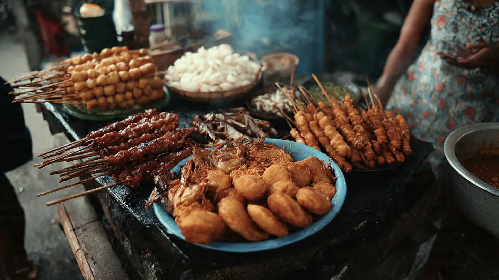

Experience the Heart of Filipino Culture
Authentic, flavorful, and deeply rooted in tradition.
Explore FoodsMaligayang Pagdating!
Street food in the Philippines is more than just a quick bite; it's a social experience. On every corner, you'll find vendors serving up a variety of grilled, fried, and steamed treats that bring people together.